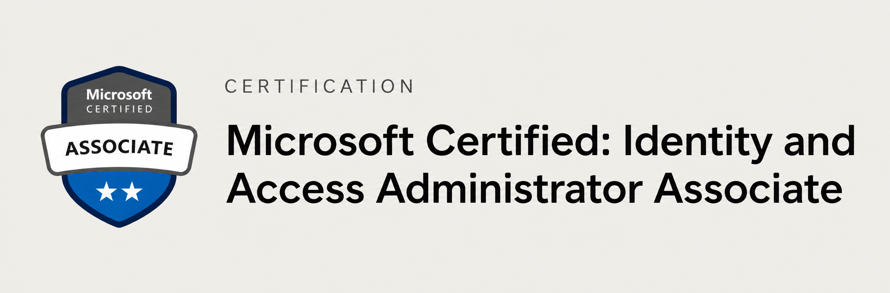

About Me
I am an Identity & Access Management Engineer focused on building secure, scalable, and identity-first platforms.
I specialize in Azure Entra ID, Active Directory, and Microsoft 365, ensuring strong access governance and authentication controls.
My work focuses on identity lifecycle management, RBAC, SSO integrations, and strengthening enterprise security through automation and policy enforcement.
Featured Work
Exchange Mailbox Audit Automation
Built PowerShell scripts to extract mailbox data and automate audit reporting, improving compliance visibility and reducing manual effort.
IAM Access Provisioning Optimization
Streamlined onboarding and offboarding workflows using AD and Entra ID, improving provisioning efficiency and access control consistency.
What I Work On
I manage IAM operations for global enterprise users, focusing on building secure and scalable identity systems with strong governance and access control.
My work includes identity lifecycle management, RBAC design, and implementing authentication protocols like SAML, OAuth, and OpenID Connect.
I administer Azure Entra ID and Microsoft 365 environments, manage application identities, and enforce security best practices.
I also build automation using PowerShell and implement Conditional Access policies to enhance security and compliance.
Certification
